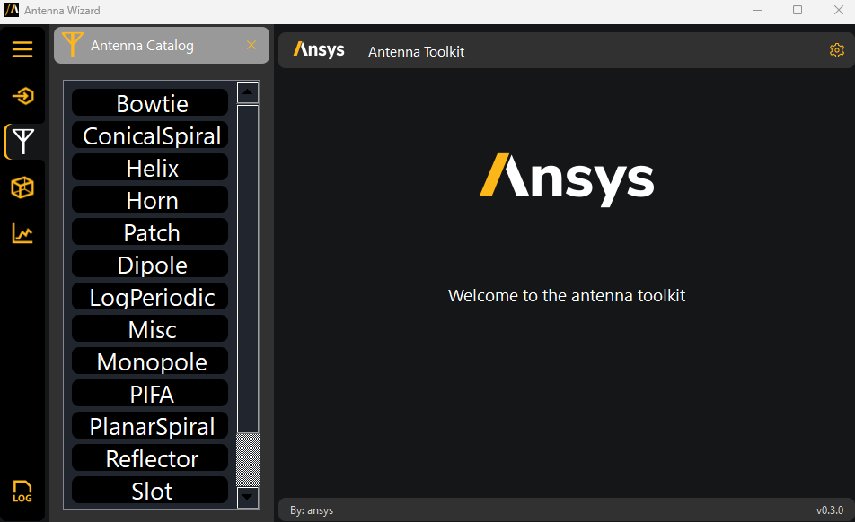
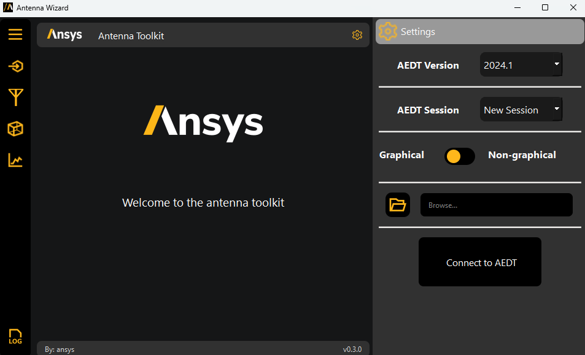

User guide#
You have multiple options for installing and launching the AEDT Antenna Toolkit:
You can install the toolkit directly in AEDT using an installation script and then launch it as a wizard. For more information, see Install toolkit in AEDT and launch the Antenna wizard.
You can install the toolkit from a Python console and then launch the Antenna wizard. For more information, see Install toolkit from Python console and launch the Antenna wizard.
You can install the toolkit from a Python console and then use the toolkit’s APIs. For more information, see Install toolkit from Python console and use the toolkit’s APIs.
Install toolkit in AEDT and launch the Antenna wizard#
You can install the AEDT Antenna Toolkit directly in AEDT using the base interpreter from the AEDT installation.
From Install from a Python file, follow the steps to install PyAEDT inside AEDT.
In AEDT, select Tools > Toolkit > PyAEDT > Console to load the PyAEDT console:

In the PyAEDT console, run these commands to add the Antenna Toolkit as a wizard (toolkit UI) in AEDT:
desktop.add_custom_toolkit("AntennaWizard") exit()
In the AEDT toolbar, click the AntennaWizard button to open this wizard in AEDT:

{kind=link}
The Antenna Toolkit Wizard is connected directly to the AEDT session. For wizard usage information, see Antenna wizard.
Install toolkit from Python console and launch the Antenna wizard#
You can install the AEDT Antenna Toolkit in a specific Python environment from the AEDT console.
Note
If you have an existing virtual environment, skip step 1.
Note
If you have already installed the toolkit in your virtual environment, skip step 2.
Create a fresh-clean Python environment and activate it:
# Create a virtual environment python -m venv .venv # Activate it in a POSIX system source .venv/bin/activate # Activate it in a Windows CMD environment .venv\Scripts\activate.bat # Activate it in Windows PowerShell .venv\Scripts\Activate.ps1
Install the toolkit from the GitHub repository:
python -m pip install pyaedt-toolkits-antenna[all]
Launch the Antenna Toolkit Wizard:
python .venv\Lib\site-packages\ansys\aedt\toolkits\antenna\run_toolkit.py
On the AEDT Settings tab, create an AEDT session or connect to an existing one:

{kind=link}
For wizard usage information, see Antenna wizard.
Install toolkit from Python console and use the toolkit’s APIs#
You can install the toolkit in a specific Python environment and use the toolkit’s APIs. The code example included in this topic shows how to use the APIs at the model level and toolkit level.
Note
If you have an existing virtual environment, skip step 1.
Note
If you have already installed the toolkit in your virtual environment, skip step 2.
Create a fresh-clean Python environment and activate it:
# Create a virtual environment python -m venv .venv # Activate it in a POSIX system source .venv/bin/activate # Activate it in a Windows CMD environment .venv\Scripts\activate.bat # Activate it in Windows PowerShell .venv\Scripts\Activate.ps1
Install the toolkit from the GitHub repository:
python -m pip install pyaedt-toolkits-antenna
Open a Python console in your virtual environment:
python
From the command line, use the toolkit to create an antenna.
This code shows how to launch AEDT, create and synthesize a bowtie antenna, and run a simulation in HFSS:
# Import required modules from ansys.aedt.core import Hfss from ansys.aedt.toolkits.antenna.backend.antenna_models.bowtie import BowTie # Open AEDT and create an HFSS design aedtapp = Hfss() # Create antenna object oantenna1 = BowTie(aedtapp) # Change frequency oantenna1.frequency = 12.0 # Create antenna in HFSS oantenna1.model_hfss() # Create setup in HFSS oantenna1.setup_hfss() # Release AEDT aedtapp.release_desktop()
To create an antenna from the toolkit level, use the
Toolkitclass.This code shows how to use the
Toolkitclass to get available antennas and their properties, open AEDT, update antenna properties, and create a bowtie antenna:# Import required modules import time from ansys.aedt.toolkits.antenna.backend.api import ToolkitBackend # Backend object toolkit = ToolkitBackend() # Get available antennas toolkit.available_antennas # Get properties properties = toolkit.get_properties() # Set properties properties = toolkit.set_properties({"length_unit": "cm"}) # Launch AEDT in a thread toolkit.launch_aedt() # Wait until thread is finished idle = toolkit.wait_to_be_idle() # Update antenna properties response = toolkit.set_properties({"substrate_height": 0.1575, "length_unit": "cm"}) # Create a bowtie antenna toolkit.get_antenna("BowTie") # Release AEDT toolkit.release_aedt()